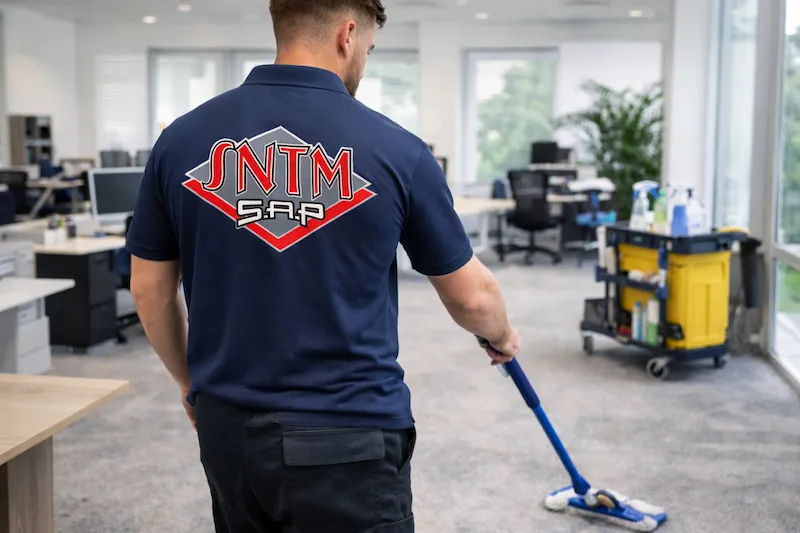

Nos réalisations
à Saint-Tropez
Locaux, villas, commerces, vitrines, hôtels, rénovation sols — découvrez la qualité de nos interventions en photos sur Saint-Tropez et tout le Golfe du Var.
Photos de nos interventions
Depuis 1999, SNTM SAP réalise des nettoyages professionnels à Saint-Tropez et dans tout le Golfe. Cette galerie présente une sélection de nos interventions : nettoyage de locaux professionnels, nettoyage de villas et résidences, nettoyage de vitrines et commerces, remise en état après travaux et rénovation de sols en marbre.
Chaque réalisation témoigne de notre engagement pour l'excellence et le soin apporté à chaque espace — de la boutique du vieux port de Saint-Tropez à la villa de Ramatuelle, du restaurant de Sainte-Maxime au bureau de Grimaud.
sur le Golfe
à Saint-Tropez
47 avis vérifiés
couvertes

Nettoyage Complet Locaux
Locaux professionnels · Saint-TropezOpen-Space
Bureaux · Grimaud
Établissement Scolaire
École · Saint-TropezProduits Éco-certifiés
Matériel pro · SNTM SAPFaçades Vitrées
Nettoyage vitrines · Saint-Tropez
Vitrines Commerce
Boutique · Saint-Tropez
Commerce — Surface de vente
Boutique · Cogolin
Rénovation Sol Marbre
Ponçage & lustrage · RamatuelleRemise en état après chantier
Après travaux · Sainte-MaximeCe que nous réalisons
à Saint-Tropez & dans le
Var
Nettoyage locaux professionnels Saint-Tropez
Bureaux, open-spaces, sanitaires et espaces communs. Nous intervenons en horaires décalés sur Saint-Tropez, Grimaud, Cogolin et tout le Golfe pour ne pas perturber votre activité.
Voir le service →Nettoyage villas & résidences Saint-Tropez
Entretien régulier et remise en état de villas et résidences de prestige à Saint-Tropez, Ramatuelle, Gassin et Sainte-Maxime. Service confidentiel, discrétion assurée.
Voir le service →Nettoyage vitrines & commerces Saint-Tropez
Nettoyage de vitrines de boutiques, baies vitrées, façades et espaces de vente. Une image impeccable pour vos clients sur Saint-Tropez et le Golfe.
Voir le service →Rénovation sols marbre & pierre — Var
Ponçage marbre, traitement pierre naturelle, béton ciré, terrazzo. Nos réalisations de rénovation de sols couvrent Saint-Tropez, Ramatuelle, Grimaud et tout le Var.
Voir les réalisations sols →Nettoyage hôtels & restaurants Saint-Tropez
Interventions quotidiennes selon les standards de l'hôtellerie-restauration. Cuisines, salles, chambres, terrasses sur le Golfe de Saint-Tropez et Sainte-Maxime.
Voir le service →Nettoyage après travaux — Var
Remise en état complète après chantier, construction ou rénovation. Poussières, déchets de chantier, nettoyage fin de travaux sur Saint-Tropez, Sainte-Maxime et le Var.
Demander un devis →Un projet à confier
à Saint-Tropez ?
Devis gratuit · Réponse sous 24h · Golfe de Saint-Tropez